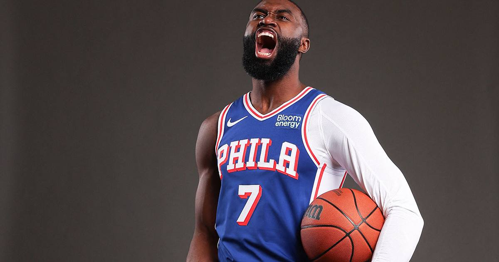

Celtics vs. 76ers preview: Tatum vs. Brown, nine years as teammates, one summer blockbuster later
The top two teams in the East meet in Philadelphia tonight, and it's personal: Jaylen Brown faces the Celtics for the first time since the summer trade that sent him to the 76ers and Paul George to Boston.

Disclosure: this post contains affiliate links. I earn a commission on qualifying purchases.
The matchup
Game: Boston Celtics (8-2) at Philadelphia 76ers (9-2)
Date and time: Tuesday, November 10, 2026, 8:00 PM ET
Arena: Xfinity Mobile Arena, Philadelphia
TV: NBC, Peacock, NBC Sports Boston
The two best teams in the Eastern Conference meet tonight, and the standings are only half the story. This is the first regular-season meeting since the summer blockbuster that split up one of the league's defining duos: Jaylen Brown is a 76er now, Paul George is a Celtic, and Jayson Tatum and Brown — teammates for nine years — share a court for the first time as opponents.
The trade that changed both teams
Brown and Tatum spent nine seasons together in Boston. They grew up in the league side by side, won a championship together, and became the identity of the Celtics. Then the summer trade sent Brown to Philadelphia and brought George to Boston, and the split has not been quiet.
The two haven't talked since the deal. Brown has taken shots at Tatum on social media and in front of reporters, and he has said he does not plan to talk to Tatum on Tuesday — he's treating it like any other game. Tatum, for his part, has kept it flat: "nothing more than Celtics vs. Sixers."
That is not how anyone else will be watching it. Every possession between them will be clipped, every stare will be read into, and the first time Brown and Tatum guard each other will be the moment the whole night is built around. Whatever they say, this one is personal — it just depends on whose version of "personal" shows up on the floor.
The stakes
Philadelphia is 9-2 and sitting first in the East, 4-1 at home after beating the Bulls 127-121 on Sunday. Boston is 8-2 and second, 3-2 on the road, riding a three-game win streak after a 117-97 win over the Bucks. The winner takes sole possession of first place, and in a conference this tight in November, that is not a throwaway line — it's the early-season statement game.
The numbers
Tatum is averaging 27.1 points, 6.0 rebounds, and 7.8 assists, and he has found his range from deep after a rocky start — five threes in each of his last two games. George, his new running mate, is at 20.4 points, 5.2 rebounds, and 4.1 assists in his first weeks in green.
On the other side, Tyrese Maxey leads the Sixers at 26.9 points and 5.5 assists, and Brown is averaging 22.3 points, 6.7 rebounds, and 4.0 assists in his new uniform. The backcourt battle — Maxey against Boston's guards — and the Brown-Tatum matchup will decide this one, but the quiet swing factor is on the glass: Brown's rebounding from the wing has been one of the early surprises of his Philadelphia stint.
Probable starters
Philadelphia: Tyrese Maxey, VJ Edgecombe, Jaylen Brown, LeBron James, Joel Embiid
Boston: Mike Conley, Derrick White, Paul George, Jayson Tatum, Neemias Queta
Injury report
Celtics: None. Boston is at full strength for the trip to Philadelphia.
76ers: Dominick Barlow (low back stress reaction), Adem Bona (cervical spine sprain), and Ariel Hukporti (right Achilles tear) are all out. Joel Embiid is clear to play — the plantar fasciitis in his foot is being managed, and he played through a minutes restriction earlier in the month.
Three storylines to watch
1. The first Tatum-Brown possession. It will happen early, it will be deliberate, and it will set the tone. If Brown comes out hunting the matchup, the building will be on its feet. If Tatum takes it the other way and attacks him, same thing.
2. George's first game against his old team — the other side of the trade. Everyone is watching Brown, but George is playing the team that traded him away, too. A big night from him in Philadelphia would be its own statement, and Boston's offense runs through the Tatum-George two-man game now.
3. Embiid's health, quietly. He is cleared to play and the minutes restriction is behind him, but a 9-2 start built on his availability is the Sixers' whole season. Against Queta and Boston's front line, how he holds up over four quarters matters more than any single highlight.
How to watch
Tipoff is 8:00 PM ET at Xfinity Mobile Arena in Philadelphia, on NBC, Peacock, and NBC Sports Boston.
Sources: ClutchPoints injury report · Fadeaway World preview · Celtics Wire (USA Today) · NBC Sports predictions · Sixers Wire (USA Today)
Gear up: Fanatics